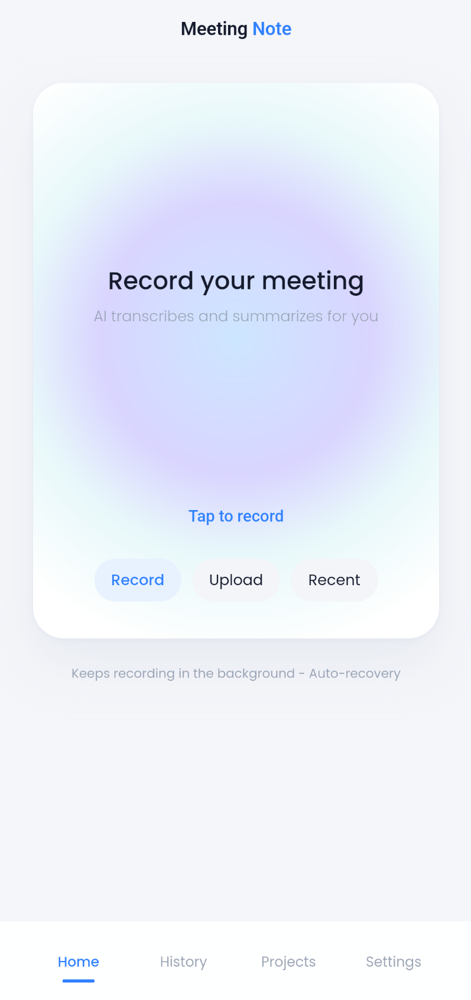
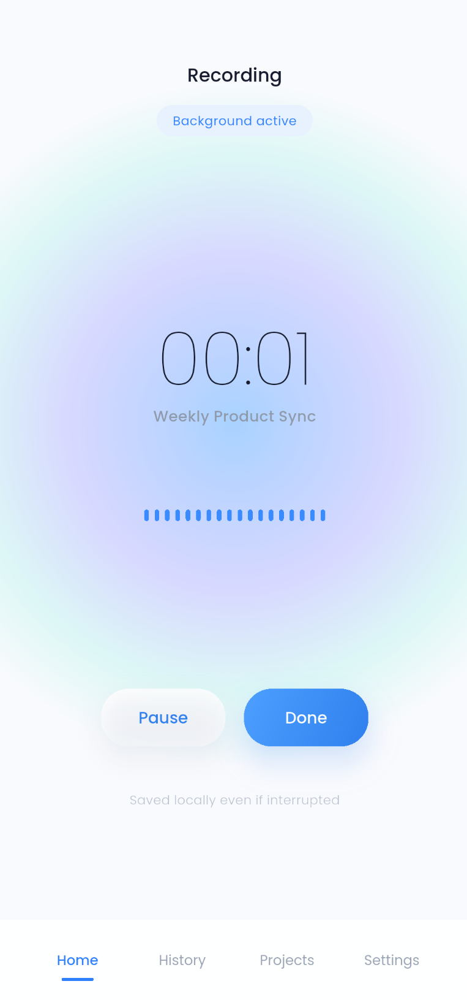
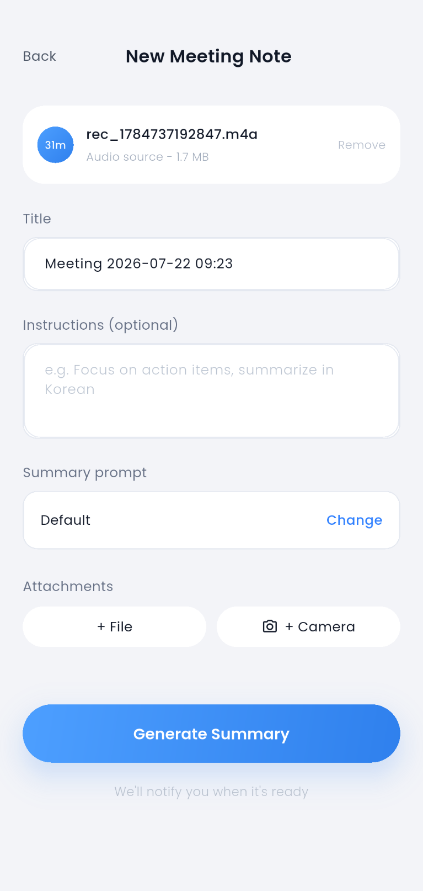

Background recording & auto-recovery
Keeps recording with the screen off or the app in the background, and saves locally as it goes. If a call or crash interrupts you, pick right back up — no audio lost.
Tap once to record — even in your pocket. Meeting Note transcribes every speaker and hands you a clean AI summary in the words that matter to you. No note-taking, no typing, no missed action items.

You run the meeting. Meeting Note does the writing. Here’s the whole flow, start to finish.
Open the app and hit record — it starts in under three seconds and keeps going in the background, even with the screen off or on a call. Everything is saved locally as you go.
Give it a title, add optional instructions like “focus on action items” or “summarize in Korean,” pick a summary template, and attach files or a photo of the whiteboard.
Transcription and summarization run on our servers — Upload, Transcribing, Summarize, Done. Close the app if you like; you’ll get a push notification the moment it’s ready.
Get a clean, formatted summary plus a full transcript with each speaker labeled and time-stamped. Rename speakers and filter the conversation by who said what.
Copy or export the summary, send it to OneDrive, and group related meetings into Projects — then ask the built-in AI questions across everything you’ve recorded.


assets/media/step-3-processing.gifassets/media/step-4-summary.pngassets/media/step-5-projects.pngOff the desk, back to back, and never at a keyboard. Meeting Note keeps up.
Keeps recording with the screen off or the app in the background, and saves locally as it goes. If a call or crash interrupts you, pick right back up — no audio lost.
Every line is diarized and time-stamped. Rename speakers, filter the transcript by person, and save speaker profiles so names carry over to the next meeting.
Choose a reusable summary template or write per-meeting instructions — “pull out action items,” “keep it to five bullets,” “summarize in Korean.” The AI follows your lead.
Group related meetings into a Project and ask questions across all of them — “what did we decide about pricing?” — in a persistent chat that remembers the whole thread.
Snap a photo of the whiteboard or add documents to a note, so the summary reflects everything in the room — not just what was said out loud.
Meeting Note speaks MCP, so your notes become a source your favorite AI assistants can query — pull meeting context into ChatGPT or Claude without copy-paste.
Phone recording is where most meeting apps fall apart: lock the screen and the mic dies. Meeting Note records natively in the background and writes to disk continuously, so an interruption is a pause, not a lost meeting.
assets/media/capture-waveform.gifSave summary templates for the meetings you run again and again — standups, client calls, 1:1s — or drop in a quick instruction for a one-off. Ask for action items only, a specific length, or a different language, and get exactly that.
assets/media/summarize-result.pngYour notes don’t just pile up in a list. Group them into Projects, then chat with an AI that has read all of them — so last month’s decision is one question away. And it’s the same account as Meeting Note on the web, so everything stays in sync.
assets/media/organize-project.pngInstall Meeting Note, tap record, and walk out with a summary. It’s that short a to-do list.